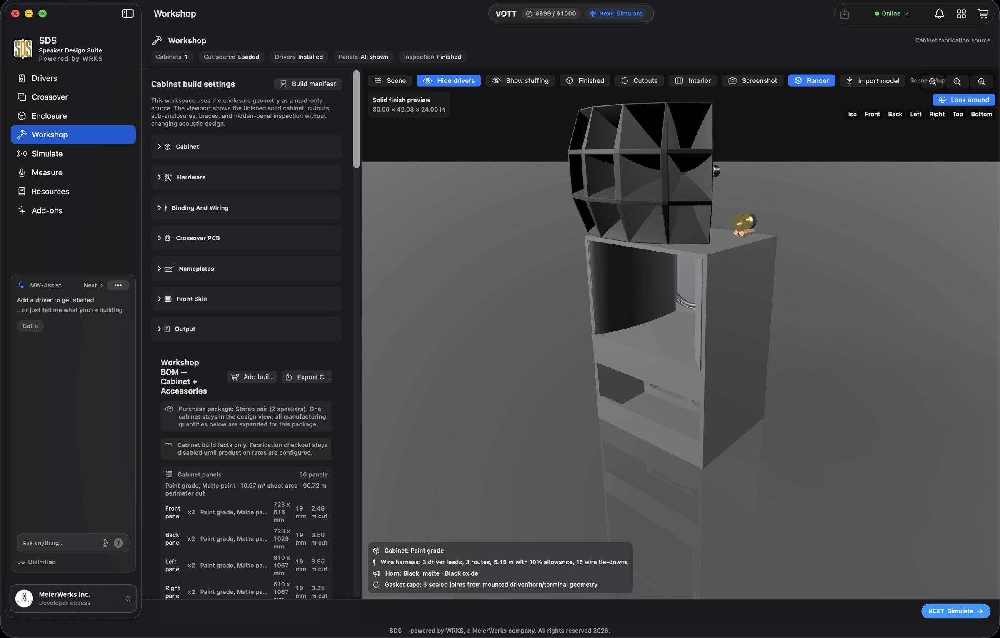

SDS : Speaker Design Suite
All the Tools, Products, Tests, and Visualized Process to Build Your Own Speaker
Our Speaker Design Suite, powered by our own WRKS engine, allows anyone – from layman to expert – to build their own speaker. SDS is a highly intuitive program combining real-time data (from costs, to size, to materials) with onscreen visualization and sound testing. Quite frankly, it’s like nothing you’ve ever seen before.
The world of DIY sound just took a major leap forward
SDS is a desktop application. A companion iOS app is available with limited capability; for full functionality, use the desktop version.


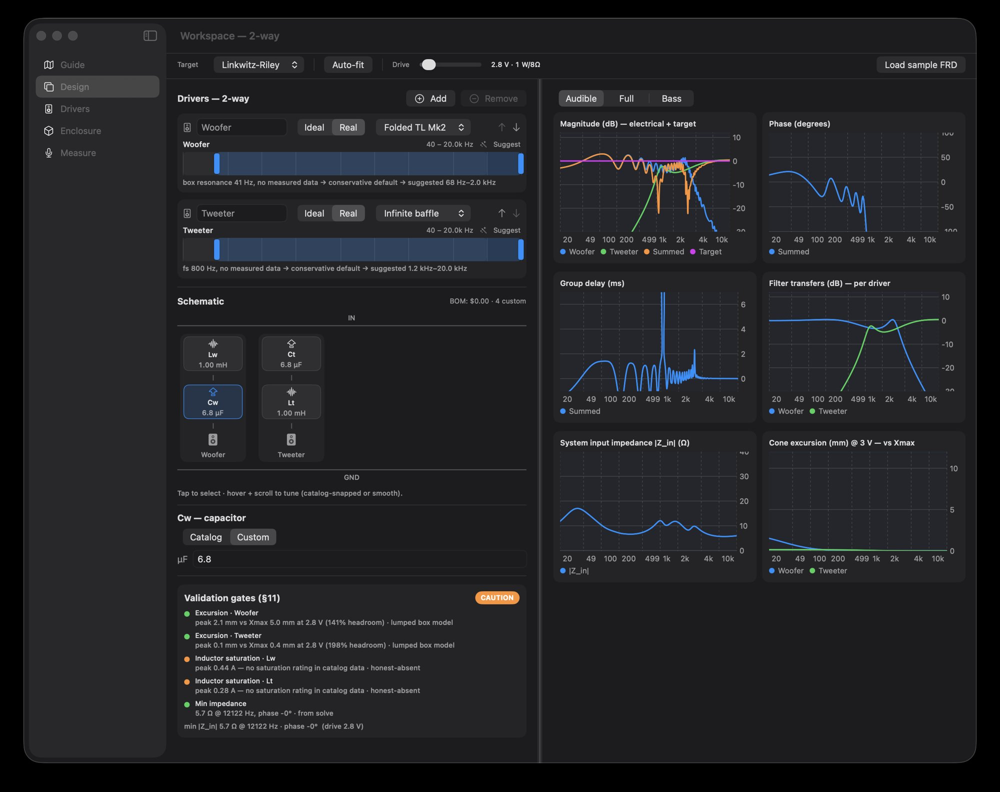
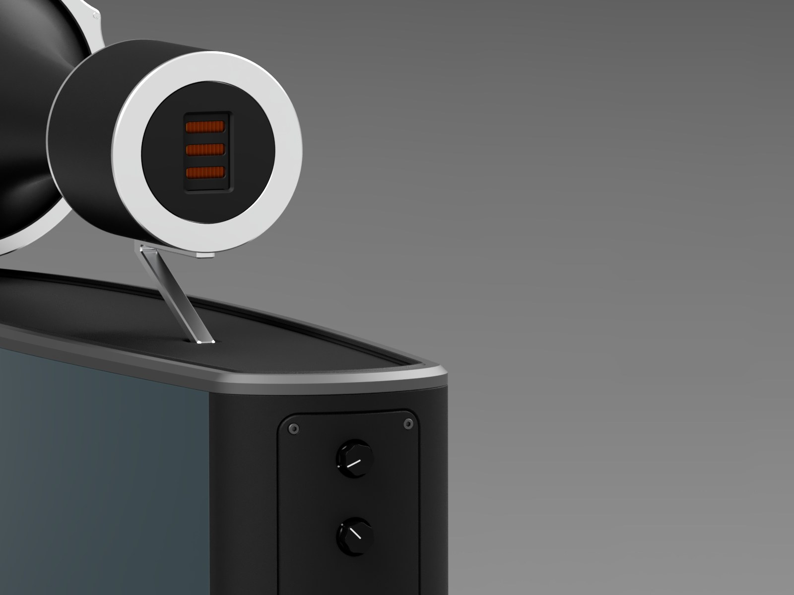
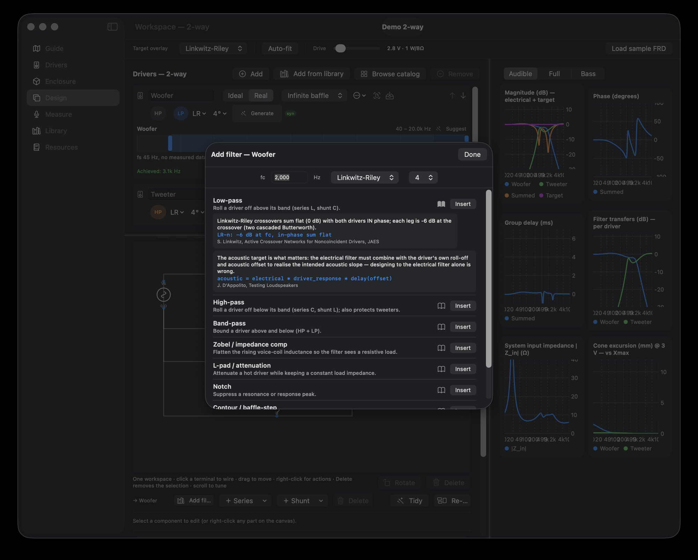
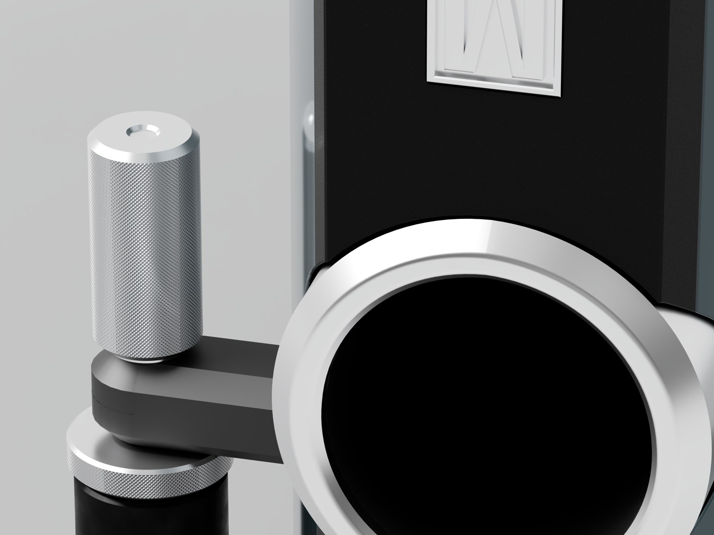
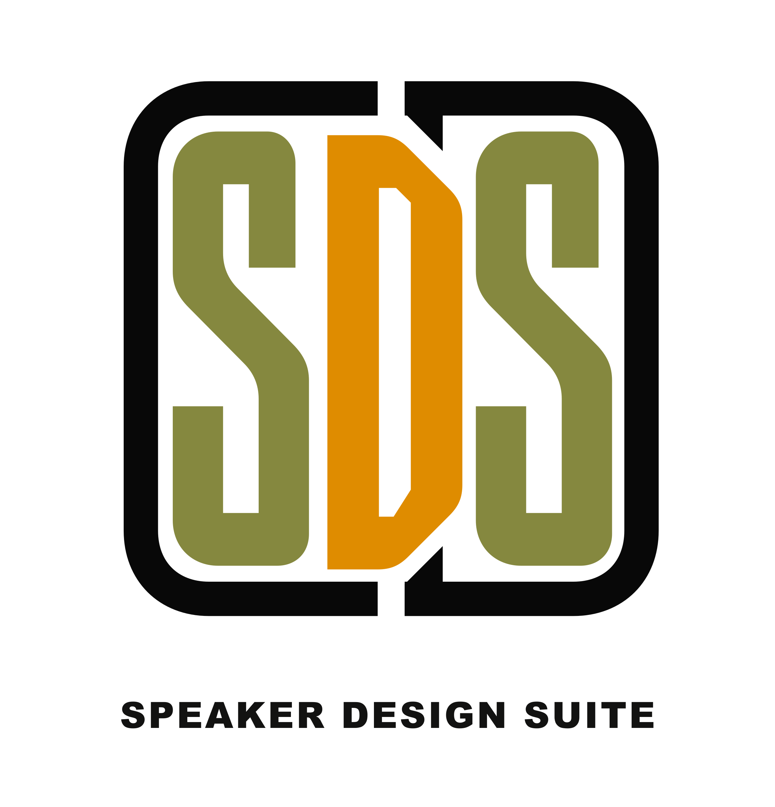
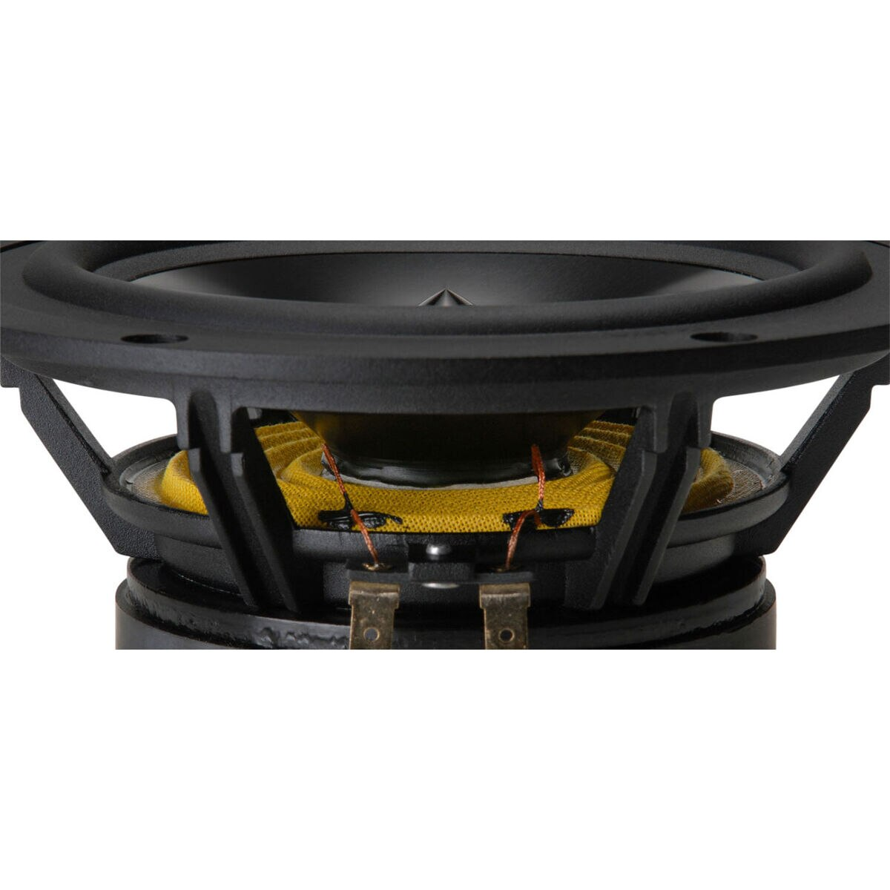
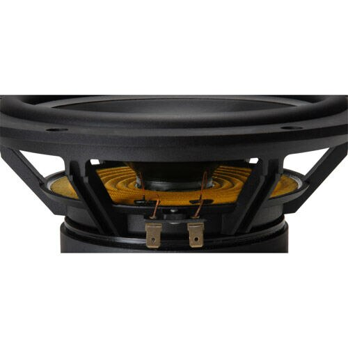
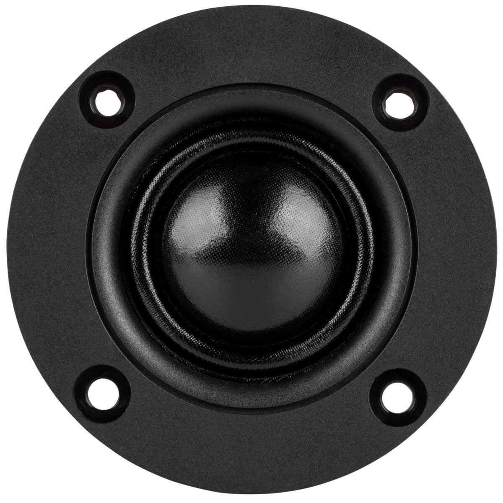
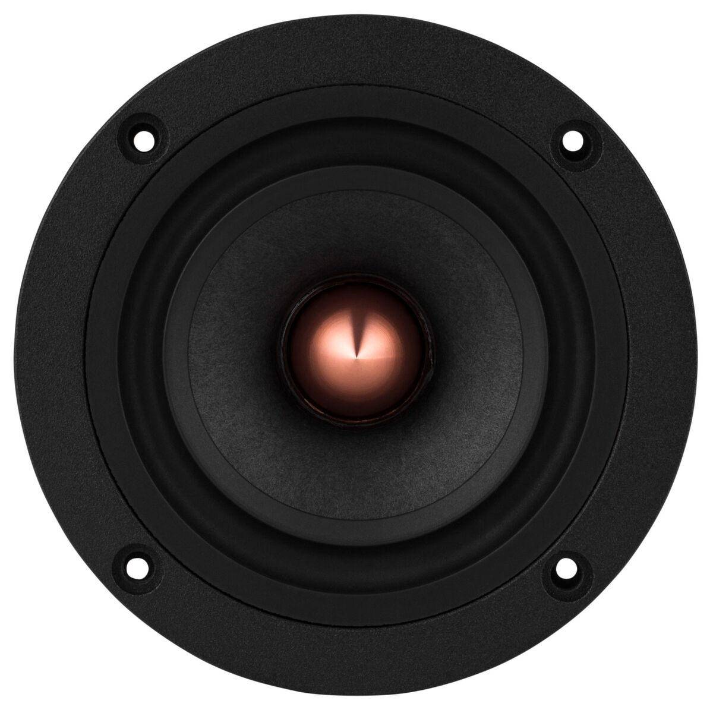
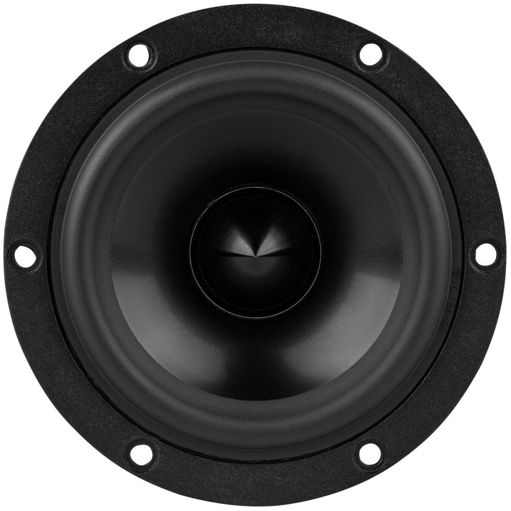
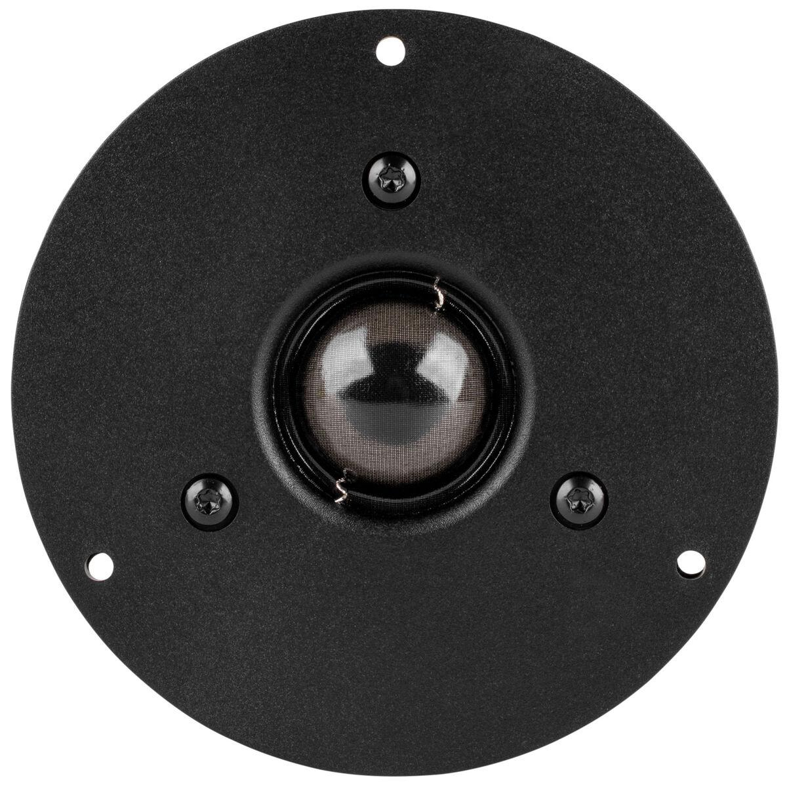
Process
Six workspaces. One document.
- 01
Drivers
Pick a driver from the catalog, type in your own Thiele-Small set, trace a manufacturer datasheet PDF, or load FRD and ZMA measurements.
- 02
Crossover
Schematic, live response and dispersion in one document. Choose a filter family from the encyclopedia, tune components, auto-fit ideal to real parts, and read summed SPL, phase, group delay, impedance and the CTA-2034 spinorama as you work.
- 03
Enclosure
Sealed, vented, passive radiator, bandpass, isobaric, transmission line, horn or open baffle. Dial volume and tuning while loading, excursion and port velocity update live.
- 04
Workshop
The 3-D cabinet and fabrication space: materials, finishes, bracing, imported CAD, bill of materials, cut files and a price for the build.
- 05
Simulate
The FEM / BEM cockpit, in six steps: cancellation, diffraction, internal resonance, panel resonance, system radiation and distortion.
- 06
Measure
Close the loop. Capture or import a measurement, gate it, compare measured against predicted, and refine the design.
Specs

WRKS is a collection of proprietary physics and simulation engines, built into all of our software.
Crossover and network
Exact nodal (MNA) circuit solver · Butterworth, Linkwitz-Riley and Bessel targets · ladder synthesis to real component values · Zobel and L-pad networks fitted to the measured impedance · filter-topology optimizer · Nelder-Mead auto-fit · CMA-ES, coordinate-descent and NSGA-II multi-objective search with a Pareto trade-off front · active / DSP crossovers with biquad export
Enclosures
Sealed, bass reflex, bandpass, passive radiator, isobaric, transmission line, horn and open baffle · Helmholtz port tuning and auto-sizing · ABCD two-port composition for lines and horns · radiation impedance · port flow-noise (chuffing) estimate
Horns
Compression-driver horn engine · Western Electric / Altec-style multicell horns · constant-directivity and sculpted-horn solvers · front-loaded horn family · BEM-derived mouth loading · flat-pattern development for fabrication
Directivity and diffraction
Analytic baffle diffraction and baffle step · BEM-solved diffraction fed back into the design chart · polar engine with the full CTA-2034 spinorama · directivity balloons · source-cancellation field across every radiating aperture
FEM / BEM
2-D exterior BEM validated to under 1 % against analytic solutions · 3-D Helmholtz BEM · interior standing-wave modes · solid-elasticity modal analysis of the assembled cabinet · panel modal solvers · GMRES iterative solver for large meshes
Cabinet, materials and structure
In-cabinet coloration transfer per driver · two-way fluid-structure coupling between air and panels · panel radiation · modal decay (ringing) in the time domain · viscous and thermal boundary-layer loss in ports and slots · Johnson-Champoux-Allard model for stuffing · material library with finite wall impedance · structural attachment of hardware and horns · physics-placed bracing, FEM-revalidated
Room
Image-source room prediction at the listening position · geometric ray acoustics to any reflection order · placement guidance
Large signal
Nonlinear motor: Bl(x), Cms(x), Le(x,i) · suspension nonlinearity · voice-coil thermal model and power compression · magnetostatic solve of the real magnetic circuit · time-domain coupled solver · excursion, port-velocity and power safety gates
Time alignment and phase
Frequency-dependent acoustic centre · minimum-phase derivation (Hilbert) · complex acoustic summation with offsets and polarity
Measurement
Sweep, RTA, cumulative spectral decay and impedance capture · calibrated microphone profiles · FRD / ZMA import · measured-versus-predicted reconciliation
Datasheets and catalog
Datasheet PDF reading: text extraction plus curve tracing with axis calibration and confidence scoring · 340-plus Parts Express / Dayton driver records · live bill of materials with indicative pricing
Rendering and fabrication
Metal path-traced photoreal rendering · DXF, STL and STEP cut files from one part list with joinery, pockets and bevels · every exported part checked closed, orientable and positive-volume before it leaves the app
MW-Assist
An assistant that observes the design, proposes fixes and applies them through the same actions the interface uses. AI orchestrates; it never simulates.
How SDS compares
| SDS | VituixCAD | Hornresp | REW | COMSOL | |
|---|---|---|---|---|---|
| Crossover design from measured FRD / ZMA | ● | ● | – | – | – |
| Sealed, vented, PR, bandpass, isobaric, TL, horn, open baffle | ● | ◐ | ● | – | ◐ |
| Horn design: compression, multicell, constant-directivity | ● | – | ◐ | – | ◐ |
| Baffle diffraction and CTA-2034 spinorama | ● | ● | – | – | ◐ |
| BEM / FEM on the real cabinet | ● | – | – | – | ● |
| Panel resonance, fluid-structure coupling, materials, stuffing | ● | – | – | – | ● |
| Large-signal motor, suspension and thermal behaviour | ● | – | – | – | ◐ |
| Measurement capture: sweep, RTA, CSD, impedance | ● | – | – | ● | – |
| Measured-versus-predicted reconciliation loop | ● | – | – | – | – |
| 3-D cabinet builder to DXF / STL / STEP cut files | ● | – | – | – | – |
| Photoreal rendering | ● | – | – | – | – |
| Parts catalog with live pricing and a one-click cart | ● | – | – | – | – |
| Datasheet PDF reading and curve tracing | ● | – | – | – | – |
| Built-in design assistant (MW-Assist) | ● | – | – | – | – |
| One live document from driver to cut file | ● | – | – | – | – |
● included · ◐ partial or build-it-yourself · – not offered
Compatibility
Built for the Mac
- Mac
- Apple silicon Mac (M1 or later) running macOS 14 Sonoma or later. SDS is a desktop application; the physics, optimizers, Workshop and rendering live here.
- iPhone and iPad
- A companion app for iOS 17 or later: measurement capture with microphone calibration, AirPlay output routing, Resources, Add-ons, orders and cart. Limited capability by design; for full functionality use the desktop version.
- Microphones
- Any calibrated USB measurement microphone; UMIK, ECM8000 and EMM-6 are recognised automatically. Phone-mic calibration profiles are supported.
- Input
- 3Dconnexion SpaceMouse for six-axis viewport navigation, alongside the mouse and trackpad.
- Imports
- FRD and ZMA measurements, manufacturer datasheet PDFs, glTF / GLB models from Fusion 360 and other CAD, SDS project and driver files.
- Exports
- DXF, STL and STEP cut files, DSP biquad coefficients, measurement files and simulation reports.
- Parts
- Parts Express is the fulfilment partner: the bill of materials hands off to a live cart with current price and stock.
Learn more